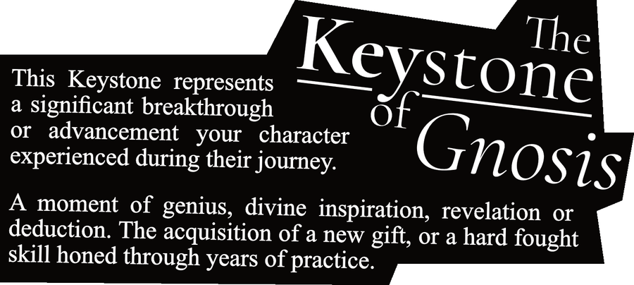
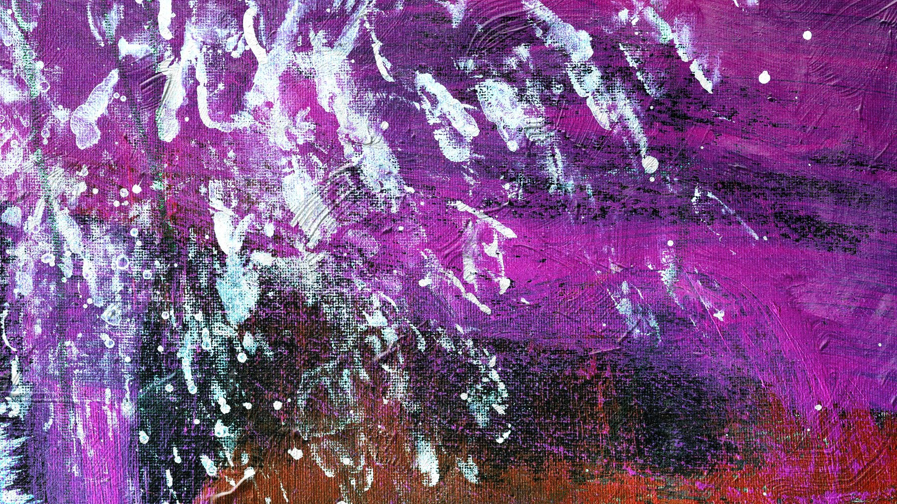
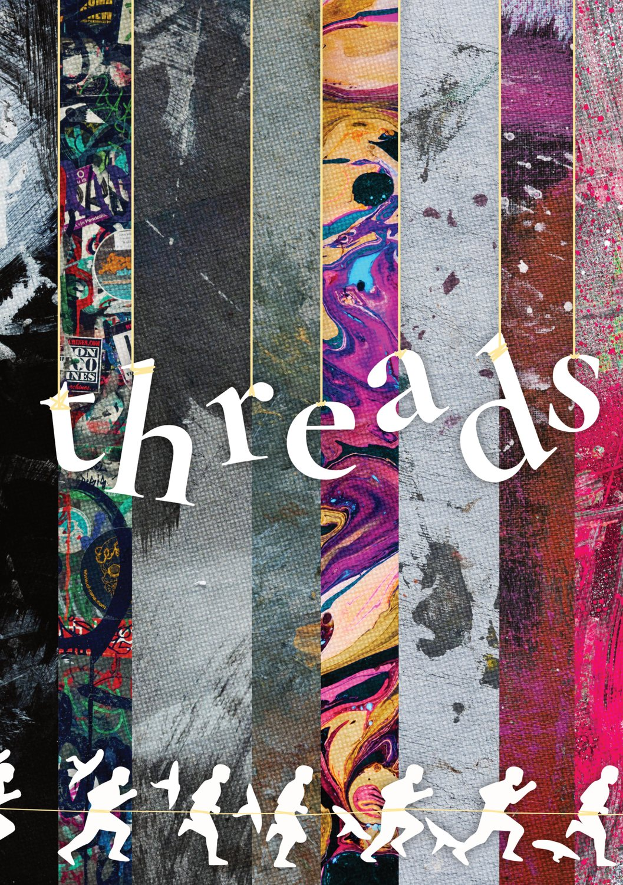
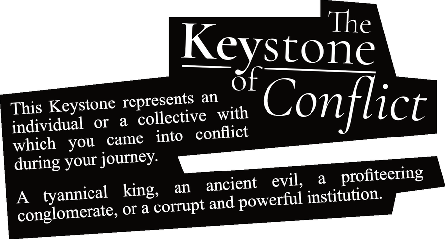
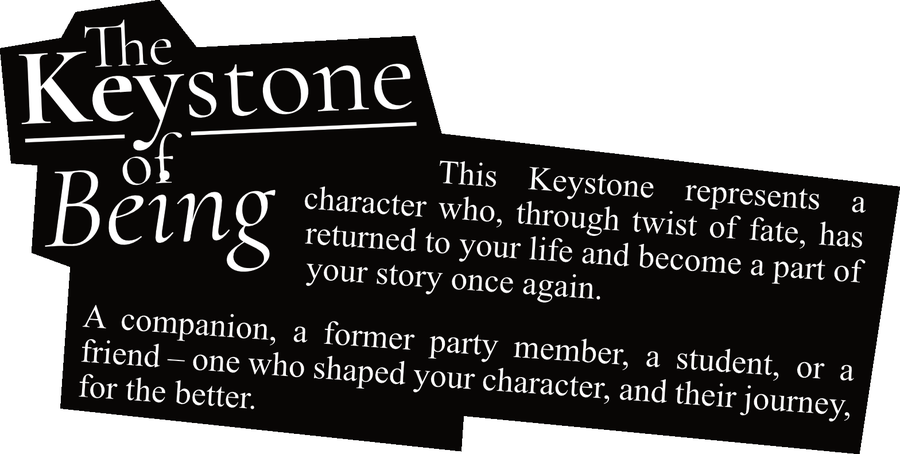
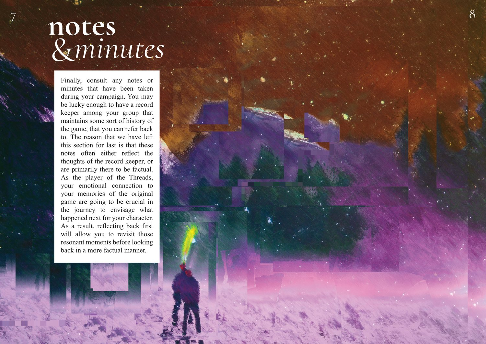

Gnosis
A breakthrough, revelation, gift, or hard-fought skill that changed what your character could become.
Post-campaign play / memory map
A reflective tabletop roleplaying game about returning to a retired character and asking what the world did after the final session stopped watching.


What next? / after the applause
Threads asks players to look back on an old campaign with affection, distance, and a little unease. Characters become history. Victories become local weather. The places they changed keep changing.
Play moves over months, years, or decades, building vignettes from remembered people, unfinished promises, former enemies, quiet hopes, and the strange gravity of a story that still knows your name.
Keystone memories / choose what still pulls

A breakthrough, revelation, gift, or hard-fought skill that changed what your character could become.

An enemy, institution, tyrant, old wound, or necessary revolt that left marks on the world.

A companion, friend, student, or remembered ally whose life braided itself through yours.

Notes and minutes / unreliable archaeology
Session notes can tell you what happened. Memory tells you what it cost. Threads lives in the gap between the factual account and the story your heart kept editing after everyone went home.
Finished / solo or group / reflective play